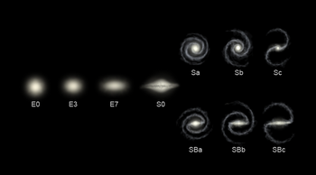
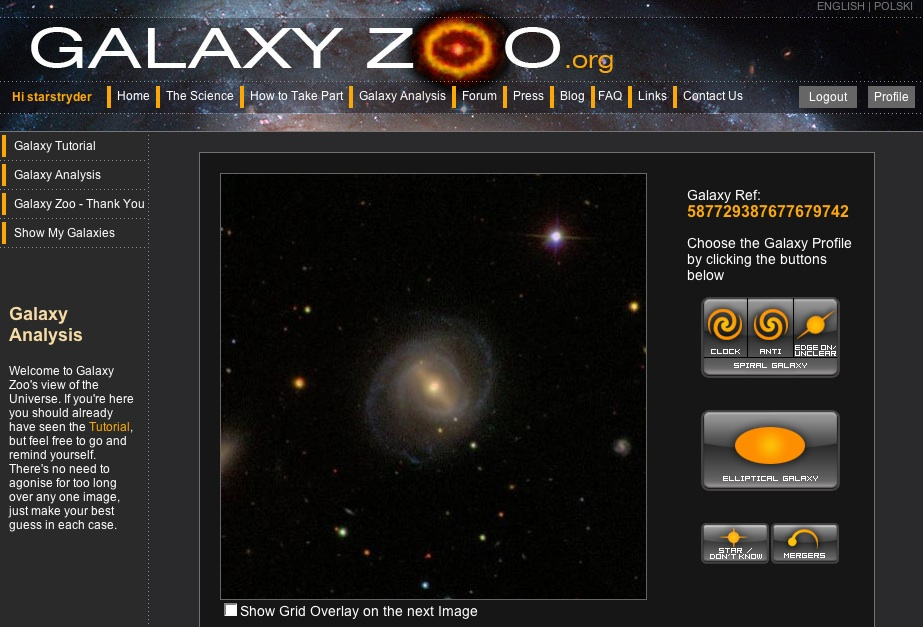
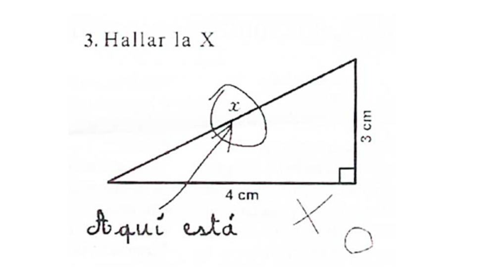
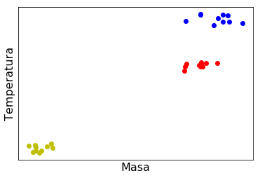
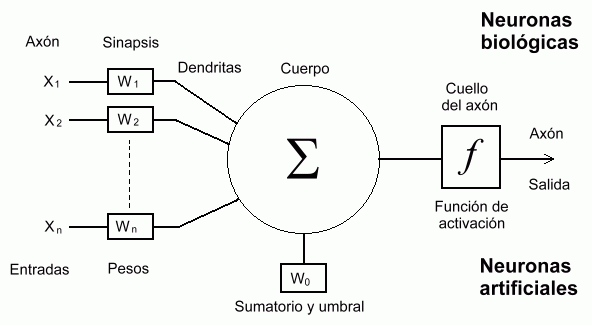
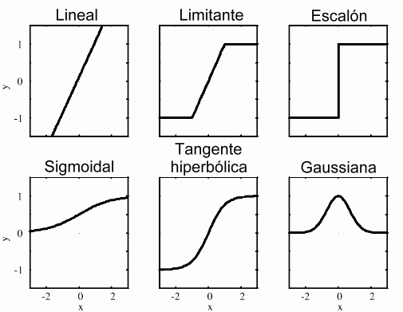
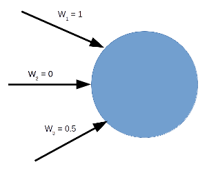
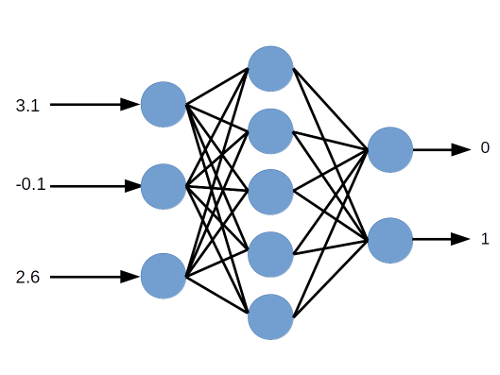

Inteligencia Artificial y Machine Learning
Hemos visto que el anlisis de datos es de gran importancia en la ciencia. Tambin hemos visto que, por la gran cantidad de datos disponibles actualmente, necesitamos nuevas tcnicas de anlisis. No es tan fcil hoy en da hacer los anlisis en forma "tradicional":
- Explorar
- Grficar
- Refutar/apoyar hiptesis
Hoy en da se necesitan algoritmos automticos para hacer el anlisis de datos, pero hay muchos tipos de anlisis que no se pueden hacer muy fcilmente de manera automtica.

Las subcategoras son:

Tradicionalmente, Cmo se clasifican las galaxias? Por la vista! Los astrnomos miran a las imagenes y deciden la categora segn su aparencia visual.
En los surveys de galaxias tpicamente se observan millones de galaxias. No es factible que alguien mire cada imagen y clasifique todas las galaxias...
Pero por qu es algo debe hacerlo una persona? Es porque los humanos son muy buenos en identificar objetos por su apariencia visual.
| Nube o conejo? |
|---|
| Slo un pan tostado? o la cara de Jess? |
|---|
Tiene sentido que una persona haga la clasificacin de las galaxias. Una solucin al problema de tener muchas imagenes de datos es pedir la ayuda de otros...
https://www.zooniverse.org/projects/zookeeper/galaxy-zoo
Este es un ejemplo de ciencia ciudadana donde cualquier persona puede ayudar a hacer nuevos descubrimientos en la ciencia y otros reas.
https://www.zooniverse.org/projects
Hay proyectos en las artes, la biologa, la historia, la literatura, la medicina, la fsica, etc.
La Inteligencia artificial (IA) es el rea de la informtica sobre el desarrollo de los algortmos que pueden lidiar estos desafos (es decir, que permiten a un computador "pensar como un humano").
Sera demasiado complejo programar explcitamente todos los pasos que un computador necesitara para reconocer una imagen.
- Sera mucho mejor si el computador pudiese aprender por si mismo como hacerlo.
Por eso, una parte muy importante de la inteligencia artificial es el diseo e implementacin de algoritmos de aprendizaje de mquina (machine learning).
Inteligencia Artificial (IA)
La IA tiene una historia larga y complicada.
Desde los primeros das de la informtica se ha preguntado si un computador podra ser tan inteligente como un humano.
El padre de la informtica, Alan Turing, ide una prueba para ver si una mquina tena inteligencia o no - la famosa prueba (test) de Turing.

La idea de la prueba es la siguiente:
- Hay una persona $C$ que hace preguntas a $A$ y $B$.
- Escondidos de la persona $C$, hay un computador $A$ y otra persona $B$.
- Si la persona $C$ no puede determinar cul de $A$ o $B$ es el computador, entonces decimos que el computador es "inteligente".

Aunque el concepto de la prueba es interesante, de hecho tiene muchos problemas:
- No es muy objetivo: depende de la persona haciendo las preguntas, de las preguntas, etc.
- Es especfico a la inteligencia *humana*. Sabemos muy bien que muchas veces los humanos actuan sin inteligencia, y parece que hay otros animales que tienen mucha inteligencia.
- Es la inteligencia "de verdad" o inteligencia "simulada"?
En la prctica, el resultado de la prueba, al final, es irrelevante!
Una analoga:
- Nadie dice que el objetivo de la aeronutica es construir aviones que vuelen de forma tan similar a los pjaros que ni los pjaros reales puedan distinguirlos!
Si bien la computacin avanza, el objetivo no es precisamente el desarrollar computadores tan "inteligentes" que no podamos distinguirlos de los humanos...
La definicin de la inteligencia
Entonces, la pregunta ms fundamental, que la prueba de Turing no aborda, es qu es la inteligencia?
La respuesta es tpicamente "algo que acta como nosotros, los humanos". Pero esta deficin es muy vaga, y lgicamente circular.
A pesar de que no hay una definicin buena de lo que es "la inteligencia", la historia de la IA incluye muchos intentos de construir una mquina con una inteligencia general, como un humano. Esta an no existe.
IA moderna
Hay un punto de vista moderno de la IA que es diferente.
En vez de crear un computador que "piensa como un humano", podemos intentar crear algortmos que hacen cosas que, usualmente, los humanos han hecho mejor que el computador.
Estas son cosas que involucran informacin incompleta, razonamiento probabilstico, inferencia, etc.
...pero es muy difcil (sin las tcnicas de machine learning) escribir un algortmo que puede identificar los contenidos de cualquier imgen.
Por cierto, el concepto de una "captcha" es para asegurar que el usuario es una persona y no un computador (un "bot"):

Es muy fcil (para nosotros) leer la palabra, pero tpicamente es muy difcil para un computador (especialmente cuando esta distorcionada como en el ejemplo).
Ejemplo: Lenguajes Naturales
En la computacin se denominan lenguajes naturales al que hablan los humanos (e.g. castellano, ingls), para poder distinguirlos de los lenguajes de programacin.
Al contrario que los lenguajes de programacin:
- Los lenguajes naturales tienen mucha ambigedad.
- Uno necesita saber el contexto de una frase para entenderla...
El rea de los lenguajes naturales es muy importante hoy en da en el rea de las IA, e.g. ChatGPT.

Hay varias reas de investigacin en el rea de lenguajes naturales en IA:
- Natural Language Processing: Procesamiento de los lenguajes naturales, por ejemplo en el uso de asistentes virtuales, traduccin automtica (Google Translate).
- Natural Language Understanding: Entendimiento de los lenguajes naturales, por ejemplo tener una mquina que puede entender el contenido de una noticia.
- Natural Language Generation: Generacin de los lenguajes naturales, por ejemplo los chatbots que responden a preguntas, o un programa que puede redactar una carta.
Prediccin
Es importante para nosotros tener la capacidad de anticipar ms o menos lo que va a pasar en el futuro (el futuro inmediato).
- Clima.
- Desastres naturales.
- Movimiento de acciones en mercados burstiles.
- Crisis econmicas/sociales.
- ...
Tpicamente esto se ha trabajado con modelos matemticos, pero hoy en da tambin puede hacerse en combinacin con las IA...
Reaccin

En el caso de un sistema inteligente, es importante reaccionar a los eventos externos.
Por ejemplo, un vehculo autnomo obviamente tiene que reaccionar bien a eventos externos...
Este aspecto de la inteligencia artificial tiene ms relevancia para los robots que para los sistemas tpicamente utilizados en la ciencia.
A la derecha: Robot de Boston Dynamics.
IA aplicada a la ciencia
Una aplicacin de la IA hoy en da es el diseo de algortmos para la extraccin de informacin til de datos complejos, incompletos e inciertos.
En la ciencia, podemos usar estos algortmos para muchos tipos de anlisis:
- Clasificacin.
- Identificacin de datos raros (outliers).
- Determinacin de relaciones entre variables.
- Predicciones para observaciones futuras.
- y mucho ms...
Hablamos de algortmos de *machine learning*: un conjunto de tcnicas diseadas para lidiar este tipo de problemas.
Se llama machine learning (aprendizaje de mquina) porque los algortmos pueden mejorar su propio rendimiento con ms y ms datos, es decir aprenden.
Ejemplo: Clasificacin de estrellas
Las estrellas pueden clasificarse en base a su temperatura y masa:
- Las estrellas en la secuencia principal tienen masas y temperaturas bajas,
- Las gigantes rojas tienen masas y temperaturas mayores.
- Las gigantes azules tienen altas masa y temperaturas an mayor.
Supongamos que tenemos mediciones de las masas y temperaturas de algunas estrellas:

Tenemos un espacio de dos parmetros: masa y temperatura. Los datos agrupan en ciertas regiones de este espacio.
datos = np.load("clase3_imagenes/datos.npy")
Importamos el mdulo scikit-learn que contiene funciones que son implementaciones de muchos algortmos de machine learning.
from sklearn.cluster import KMeans
Ahora vamos a usar el mtodo k-means clustering. Suponemos que hay $3$ grupos de puntos (clusters). La funcin KMeans crea un objeto que podemos usar con nuestros datos.
kmeans = KMeans(n_clusters=3, n_init=10)
Aplicamos nuestro modelo de k-means a los datos que tenemos.
kmeans.fit(datos)
KMeans(n_clusters=3, n_init=10)In a Jupyter environment, please rerun this cell to show the HTML representation or trust the notebook.
On GitHub, the HTML representation is unable to render, please try loading this page with nbviewer.org.
KMeans(n_clusters=3, n_init=10)
Podemos ver las posiciones de los centros de los grupos, segn el algoritmo:
kmeans.cluster_centers_
array([[ 12.12593034, 12.23503402],
[108.56303493, 150.63381276],
[ 98.73404627, 101.08138838]])
El algoritmo indica cual punto est en cual grupo con una etiqueta (label):
kmeans.labels_
array([0, 0, 0, 0, 0, 0, 0, 0, 0, 0, 2, 2, 2, 2, 2, 2, 2, 2, 2, 2, 1, 1,
1, 1, 1, 1, 1, 1, 1, 1], dtype=int32)
Podemos usar estos nmeros en la funcin scatter que grafica los datos. Uno de los argumentos de scatter es "c", para especificar el color de cada punto.
scatter(datos[:,0], datos[:,1], c=kmeans.labels_)
show()
![No description has been provided for this image]()
El algoritmo ha identificado correctamente los distintos grupos de puntos!
Es importante notar que no hemos dado informacin sobre los datos: solamente que estamos buscando $3$ grupos. El algortmo aprendi cuales son los grupos.
Este algoritmo es muy til si queremos identificar grupos en muchos datos.
Por ejemplo, en vez de $30$ puntos, quizs tenemos $10000$ estrellas, y mediciones de $8$ variables, y no solamente $2$. Entonces, estaramos buscando varios grupos dentro de los $10000$ puntos en un espacio con $8$ dimensiones! Vemos entonces que un algortmo automtico ayuda muchsimo.
Aprendizaje con supervisin
El ejemplo anterior era de un mtodo "sin supervisin":
- No teniamos que dar datos de "entrenamiento" para ensear el algortmo.
- Es decir, el algoritmo se aplic a nuestros datos en forma directa.
Ahora veamos un ejemplo de un algortmo con supervisin, donde tenemos que ensear al algortmo con algunos de los datos.
Ejemplo: rbol de decisin (decision tree)
rbol de decisin: Es como un diagrama de flujo. El algortmo divide los datos segn sus propiedades hasta que sean totalmente categorizados.
- Pero, el algoritmo necesita saber cuales propiedades corresponden a cuales categoras - por lo tanto hay que "entrenar" el algoritmo antes.
- Usamos datos que ya estn categorizados (datos de entrenamiento), y el algortmo se ajusta hasta que funcione bien con estos datos.
Despus, podemos aplicar el algortmo a datos nuevos.
Ejemplo: clasificacin (taxonoma) de animales.
Tenemos un conjunto de datos (observaciones) que son las caractersticas de algunos animales.
Supongamos que tenemos observaciones de caballos, perros, vacas y pelcanos.
| Observaciones | Caballo | Perro | Vaca | Pelcano |
|---|---|---|---|---|
| 4 patas? | Si | Si | Si | No |
| Tiene pelaje? | No | Si | No | No |
| Tiene ubres? | No | No | Si | No |
De las observaciones podemos determinar qu animal es usando un rbol de decisin:
Ahora tenemos una clasificacin de los datos segn el rbol.
Con datos cientficos, podemos construir el rbol en forma automtica usando un algortmo computacional.
De nuevo, el mdulo de scikit-learn en Python contiene funciones para esto.
graph
![No description has been provided for this image]()
Redes neuronales artificiales
Un algoritmo ms complejo en el rea de machine learning es una Red Neuronal Artificial (RNA).
La investigacin de las RNA comenz hace muchos aos en los primeros das de la Inteligencia Artificial.
La idea bsica es crear un modelo computacional de algo similar a la estructura del cerebro:
Una neurona en el cerebro se activa cuando recibe un seal suficientemente fuerte (un pulso elctrico) de otras neuronas que estn conectadas a sus dendritas.
Cuando la neurona se activa, manda un pulso elctrico a lo largo de su axn que termina en sinapsis que se conectan con las dendritas de otras neuronas.
En la prctica, la neurona recibe entradas (impulsos elctricos) y entrega salidas (impulsos elctricos).
Esto es parecido a una funcin matemtica:

Una red neuronal artificial es un modelo muy simplificado de esta estructura cerebral. Las neuronas artificiales son as:
|  |
|---|
| Neurona de McCulloch-Pitts |
En este modelo, la neurona recibe "seales" en sus dendritas, que son simplemente los nmeros $x_n$ multiplicados por pesos $w_n$.
Luego, en el cuerpo de la neurona se calcula la sumatoria (y a veces se agrega un valor de umbral).
El resultado de la sumatoria va como entrada a la funcin de activacin $f$.
Podemos elegir (casi) cualquier funcin para la funcin de activacin $f$. Algunas posibilidades son:

El resultado de la funcin de activacin es la salida de la neurona, que puede ir como entrada a otra neurona, y as formar una red compleja.
Un ejemplo:
Una neurona recibe $4$ valores de entrada: $x_1 = 1$, $x_2 = -3$, $x_3 = -4$, $x_4 = 2$. Los pesos son $w_1 = 0.1$, $w_2 = 0.3$, $w_3 = 0.1$ y $w_4 = 0.5$. El sumatorio, usando los pesos, ser:
$$x_1 w_1 + x_2 w_2 + x_3 w_3 + x_4 w_4 = -0.2$$Supongamos que funcin de activacin $f$ es la funcin escaln en los ejemplos arriba. Su valor de entrada es $-0.2 < 0$ as que su valor de salida es $-1$.
Por otra parte, si el valor de un peso fuese $w_1 = 0.5$ en vez del valor del ejemplo anterior, el sumatorio ser igual a $0.2 > 0$ y la salida de la funcin de activacin ser $+1$.
Podemos contectar varias neuronas y as formar una Red Neuronal.

En el caso de una red:
- Ingresamos valores de entrada a la primera capa de neuronas, que se llama la capa de entrada.
- Las salidas de las funciones de activacin de las neuronas en la primera capa dependen de los valores de entrada.
- Estas salidas van como entrada a la prxima capa de neuronas. Ya que esta capa no est conectada al mundo "exterior" de la red, se llama una capa oculta.
- Las salidas de la capa oculta van como entradas a la capa de salida, y las salidas de esta ltima capa son corresponden a las salidas finales de la red.
Mientras ms capas ocultas tenga una red, ms poderosa y compleja es.
Antes mencionamos que las redes neuronales artificiales son como las funciones matemticas.
Pero, una red neuronal artificial puede aprender y mejorar su propio rendimiento! Cmo lo hace?
Aprendizaje de la red
Cada conexin (sinapsis) entre las neuronas tiene asociado un peso. Este es un valor (tpicamente) entre $0$ y $1$. Un valor de $0$ significa que esta conexin no contribuye nada la activacin de la neurona. Un valor de $1$ significa que esta conexin tiene una contribucin mxima a la activacin de la neurona:

La activacin o no de cada neurona depende de los valores de los pesos. El resultado final (la salida final) de la red depende del patrn de activacin de toda la red.
- Podemos usar datos conocidos para ajustar los pesos para obtener la salida que queremos. Este proceso se llama entrenamiento de la red.
Por ejemplo, supongamos que tenemos una red neuronal con $3$ entradas. Damos los valores $3.1$, $-0.1$, $2.6$ como entradas a la red. Las salidas que queremos son $0$ y $1$ (hay dos neuronas en la capa de salida de esta red).

Cmo podemos garantizar que tendremos las salidas correctas? Ajustando los pesos.
Queremos una red que pueda representar los siguientes valores de entrada y salida:
| Entradas | Salida |
|---|---|
| 0 0 1 | 0 |
| 1 1 1 | 1 |
| 1 0 1 | 1 |
| 0 1 1 | 0 |
Utilizaremos esto para entrenar la red.
Posteriormente, preguntaremos cul ser la salida para las siguientes entradas?
| Entradas | Salida |
|---|---|
| 1 0 0 | ? |
Si nos fijamos bien, en nuestros datos de entrenamiento hay un patrn (oculto): la salida siempre es igual a la primera entrada.
Luego, la salida debera ser $1$.
El primer paso es entrenar la red con los datos conocidos, i.e. determinar los pesos de cada entrada.
- Podemos comenzar el proceso utilizando pesos aleatorios.
- Despus actualizamos los valores de los pesos hasta tener las salidas correctas.
Generamos $3$ pesos iniciales al azar (uno para cada entrada de la neurona):
pesos = random.uniform(low=0.0,high=1.0,size=3)
pesos
array([0.29272054, 0.29792714, 0.92678193])
El proceso de entrenamiento:
- Elegimos un conjunto de entradas (por ejemplo, la primera fila de la tabla arriba).
- Aplicamos los pesos a estos valores para calcular el sumatorio ponderado de las entradas.
- Utilizamos el resultado del sumatorio como entrada a la funcin de activacin $f$ de la neurona.
- La salida de la funcin de activacin, en este caso, es la salida de la red. Comparamos esta salida con el valor correcto y calculamos el error.
- En este caso, el error es la diferencia entre la salida de la neurona y la salida correcta.
- Ajustamos los pesos.
- Repetimos el proceso muchas veces...
Paso 1
Elegimos la primera fila de entradas. Entonces tenemos $x_1 = 0$, $x_2 = 0$, $x_3 = 1$.
Paso 2
Sumatorio ponderado de las entradas: $x = \sum_i w_i x_i = w_1 x_1 + w_2 x_2 + w_3 x_3$.
entradas = array([0,0,1])
pesos*entradas
array([0. , 0. , 0.92678193])
Es conveniente notar que podemos representar las entradas y los pesos como vectores $\vec{x}$, $\vec{w}$.
sumatorio = sum(pesos*entradas)
sumatorio
0.9267819322375793
Pasos 3 y 4
La funcin de activacin que vamos a ocupar en este caso es la funcin sigmoide: $y = \frac{1}{1+e^{-x}}$
La sigmoide es muy utilizada porque se parece a la funcin escaln (0 o 1), pero es ms fcil derivar ya tiene una transicin ms suave, i.e. es siempre continua:
xvals = linspace(-6,6,100)
yvals = 1.0/(1.0 + exp(-xvals))
plot(xvals,yvals)
show()
![No description has been provided for this image]()
Entonces, la salida de la funcin de activacin en este caso es es:
1.0/(1.0 + exp(-sumatorio))
0.7164219534805756
Paso 5
Debemos comparar este resultado con la salida correcta, que es $0$.
El error en nuestra salida es la diferencia entre la salida correcta y la de la red:
$\epsilon = y_c - y$
(Hay varias maneras de calcular el error. Estamos usando una opcin simple)
error = 0 - 1.0/(1.0 + exp(-sumatorio))
error
-0.7164219534805756
Paso 6
Ahora viene la parte ms complicada. Queremos ajustar los pesos para mejorar el rendimiento de la red. En otras palabras, queremos reducir el error mediante un ajuste de los pesos.
Pensando en el problema en una forma matemtica: lo que buscamos es el mnimo de la funcin que da el error. La operacin de buscar este mnimo es algo que se llama optimizacin.
- De la aplicacin del clculo diferencial a este problema, es posible demostrar que la siguiente actualizacin de los pesos sirve:
- Dado que para $y$ (que es la funcin de activacin de la neurona) hemos escogido una sigmoide, su derivada es:
Esta ecuacin nos dice que el ajuste de los pesos es:
Proporcional al error $\epsilon$. Si el error es grande, implica que los valores de los pesos estn muy lejos de sus valores ptimos, y por lo tanto deberamos cambiarlos ms que en el caso de un error pequeo.
Proporcional a las entradas $\vec{x}$. As que, cada peso es proporcional a la entrada asociada. Si la entrada asociada al peso es igual a cero, no importa que valor de peso tenemos y por lo tanto no es necesario cambiarlo.
Proporcional a la derivada de la funcin de activacin. Buscamos el mnimo del error, $\epsilon$. Este error esta dado por $\epsilon= y_c - y$. Para encontrar el mnimo de una funcin, hay que considerar su derivada. Entonces, la derivada del error es la derivada de la funcin $y$ ($y_c$ es una constante).
Es posible demostrar matemticamente como actualizar los pesos para una red que tiene un nmero arbitrario de neuronas y conexiones.
Esta parte del algortmo (la actualizacin de los pesos) es la parte ms importante de la operacin de una red neuronal artificial. El algortmo para actualizar los pesos se llama *backpropagation*.
Es por el uso de backpropagation que la red puede aprender. Este es la diferencia entre una red neuronal artificial y una funcin matemtica!
Ahora, calculamos la derivada:
y = 1.0/(1.0 + exp(-sumatorio))
derivada = y*(1-y)
derivada
0.20316153805165157
Entonces los cambios de los pesos son:
delta_w = error * entradas * derivada
delta_w
array([-0. , -0. , -0.14554939])
Actualizamos los valores de los pesos:
pesos += delta_w
pesos
array([0.29272054, 0.29792714, 0.78123255])
Calculamos el resultado con los nuevos valores de los pesos...
sumatorio = sum(pesos*entradas)
1.0/(1.0 + exp(-sumatorio))
0.6859456950655682
El valor ha reducido despus de la actualizacin de los pesos. Hay que repetir el proceso varias veces, y tambin hay que ocupar todas los pares de entradas/salidas de entrenamiento:
| Entradas | Salida |
|---|---|
| 0 0 1 | 0 |
| 1 1 1 | 1 |
| 1 0 1 | 1 |
| 0 1 1 | 0 |
Entonces, vamos a aplicar el algortmo a todas las entradas/salidas que tenemos.
entradas = array([[0,0,1],[1,1,1],[1,0,1],[0,1,1]])
salidas = array([[0,1,1,0]]).T ## La "T" significa la transpuesta del arreglo
entradas
array([[0, 0, 1],
[1, 1, 1],
[1, 0, 1],
[0, 1, 1]])
salidas
array([[0],
[1],
[1],
[0]])
pesos = random.uniform(low=0, high=1.0, size=(3,1))
pesos
array([[0.84993761],
[0.55092806],
[0.90156574]])
Definimos una funcin en Python para la funcin de activacin de la neurona.
def sigmoide(x):
return( 1/(1+exp(-x)) )
Podemos calcular el sumatorio de cada conjunto de entradas con los pesos ocupando el producto escalar entre cada fila del arreglo "entradas" y el vector "pesos". En NumPy el producto escalar est dado por la operacin dot:
y = sigmoide(dot(entradas, pesos))
y
array([[0.71127116],
[0.90907821],
[0.85214232],
[0.81038194]])
Los errores son:
errores = salidas - y
errores
array([[-0.71127116],
[ 0.09092179],
[ 0.14785768],
[-0.81038194]])
La derivada de la funcin de activacin otra vez es $y(1-y)$:
derivadas = y*(1-y)
derivadas
array([[0.2053645 ],
[0.08265502],
[0.12599579],
[0.15366305]])
Entonces, para calcular los cambios de los pesos $\delta \vec{w} = \epsilon \vec{x} \frac{dy}{dx}$ para cada fila de entradas podemos usar la operacin "dot" de nuevo:
entradas.T
array([[0, 1, 1, 0],
[0, 1, 0, 1],
[1, 1, 1, 1]])
dot(entradas.T, errores * derivadas)
array([[ 0.02614459],
[-0.11701062],
[-0.24445102]])
Estos son los valores de $\delta \vec{w}$ que usamos para actualizar los pesos. Ahora, repetimos este proceso muchas veces ($10000$) para entrenar la red:
for iteracion in range(10000):
# Calculamos para todas las entradas y pesos
y = sigmoide(dot(entradas, pesos))
errores = salidas - y
derivadas = y*(1-y)
pesos += dot(entradas.T, errores * derivadas)
pesos
array([[ 9.67289994],
[-0.20837025],
[-4.62927587]])
Ahora comparamos las salidas de la red, para cada fila de entradas, con los valores correctos:
sigmoide(dot(entradas, pesos))
array([[0.00966745],
[0.99211795],
[0.99359101],
[0.00786337]])
Estos valores son bastante similares a los valores exactos:
| Entradas | Salida |
|---|---|
| 0 0 1 | 0 |
| 1 1 1 | 1 |
| 1 0 1 | 1 |
| 0 1 1 | 0 |
Si estamos conformes con estas respuestas, entonces hemos terminado de entrenar a la red.
Ahora... Podr nuestra red puede determinar el valor correcto para entradas que nunca ha visto? Queremos ver la siguiente salida:
| Entradas | Salida |
|---|---|
| 1 0 0 | 1 |
nuevas_entradas = array([1,0,0])
sigmoide(dot(nuevas_entradas, pesos))
array([0.99993704])
Esta respuesta est muy cerca del valor correcto, que es $1$!
En la red que vimos haba solamente una neurona, as que no era una "red" de verdad.
Con varias tapas de varias neuronas, podemos tener una relacin muy compleja (no-lineal) entre las entradas a la red, y las salidas.
Por eso, las RNAs son muy tiles para problemas de anlisis de datos en la ciencia que son problemas muy no-lineales.
Fuera de la ciencia, las RNAs son la base de intentos de disear inteligencias artificiales que tienen el nivel de la inteligencia humana.

Las recomendaciones de videos en YouTube estn determinadas por una red neuronal artificial...

Resumen
- La cantidad de datos que hay en la ciencia hoy en da requieren tcnicas de anlisis ms all de las "tradicionales".
- Con el desarrollo de algoritmos de machine learning hoy en da es posible automatizar muchos tipos de anlisis que antes necesitaban una persona.
- Hemos visto algunos ejemplos de algortmos de machine learning:
- Con supervisin (redes neuronales, rboles de decisin)
- Sin supervisin (k-means clustering)
- En
Pythonhay varios mdulos que son tiles en esta rea, comoscikit-learn. - Hay nuevas herramientas como
TensorFlowque ayudan en el diseo de redes neuronales. - La importancia de estas herramientas va a seguir creciendo hacia el futuro!